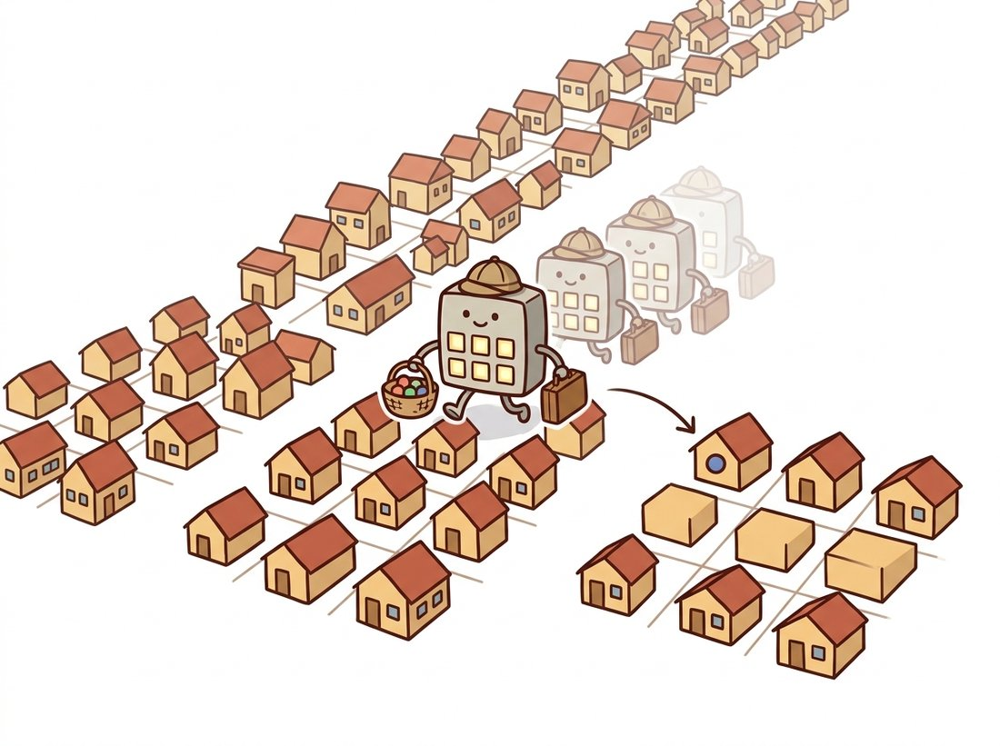

"People keep asking whether I flip before I slide. After forty years in this business, I can tell you: with a symmetric kernel, nobody can tell, and with an asymmetric one, nobody checks."
A Slightly Flipped Convolution Kernel
Almost every operation in classical image processing, and every convolutional layer in deep learning, is the same simple loop: center a small grid of weights on a pixel, multiply weights by the pixels underneath, sum, and write the result. This section builds that loop from nothing. We define correlation (slide and dot-product), then convolution (the same thing with the kernel flipped), explain why the flip exists and when it matters, and finish by running the identical operation through NumPy, OpenCV's filter2D, and PyTorch's conv2d, the function that will carry all of Chapter 19.
In Chapter 2 every output pixel was a function of exactly one input pixel: $g(x, y) = T(f(x, y))$. That restriction made point operations fast and simple, but it also made them blind. A point operation cannot reduce noise, because at a single pixel there is no way to distinguish noise from signal; it cannot detect an edge, because an edge is by definition a relationship between neighboring pixels. This section takes the step that changes everything: the output at $(x, y)$ now depends on a whole neighborhood of input pixels around $(x, y)$. The rest of Part I, and a striking fraction of Parts III and IV, is the study of what becomes possible once that step is taken. The illustration below sketches the metaphor that runs under this entire chapter: a small kernel sliding across the image, gathering each pixel's neighbors and producing one output at a time.

1. From Points to Neighborhoods Beginner
A neighborhood operation computes each output pixel from a small window of input pixels, almost always a square window centered on the output position. The simplest useful example: replace every pixel with the average of the $3 \times 3$ block around it. Noise that fluctuates up at one pixel and down at its neighbor partially cancels in the average, while the underlying scene, which varies slowly, survives. That is already a working denoiser, and we will refine it in Section 3.2.
The key abstraction is to separate the pattern of weights from the sliding machinery. The weights live in a small matrix called a kernel (also: filter, mask, window, or in the deep learning literature, a filter bank entry). The machinery, identical for every kernel, slides the kernel across the image and computes a weighted sum at each stop. Change the kernel and the same machinery blurs, sharpens, differentiates, or detects patterns. This is precisely the design of a convolutional layer in Chapter 19: the machinery is fixed in the architecture, and gradient descent chooses the weights.
Filtering separates what to compute (the kernel weights) from how to compute it (the sliding window). Every filter in this chapter differs only in its handful of weights. Deep learning's contribution, three chapters' worth of detail in Part III, is to stop choosing those weights by hand and let the data choose them. The machinery you learn in this section is reused unchanged, billions of times per second, inside every convolutional neural network (CNN) ever trained.
2. Correlation: Slide, Multiply, Sum Beginner
Let $I$ be a grayscale image and $K$ a kernel of size $(2a+1) \times (2b+1)$, indexed so that $K(0,0)$ is its center. Cross-correlation (usually just "correlation") is defined as:
$$ (I \otimes K)(x, y) \;=\; \sum_{i=-a}^{a} \sum_{j=-b}^{b} K(i, j)\, I(x + i,\; y + j) $$
In words: lay the kernel on the image with its center at $(x, y)$, multiply each kernel weight by the pixel directly underneath it, and add everything up. Three words capture the whole operation, and they are worth carrying for the rest of the book: slide, multiply, sum. Every filter in this chapter, and every convolutional layer in Parts III and IV, is those three words with different numbers in the kernel. The centered indexing ($i, j$ running from $-a$ to $a$) is a mathematical convenience that keeps the center at the origin; in the array-based code below the same kernel is simply a 2D array indexed from 0, and lining its top-left corner up with the top-left of the window produces the identical sum. Figure 3.1.1 traces one stop of this process: the shaded $3 \times 3$ patch of the input aligns with the kernel, their elementwise products are summed, and the single resulting number lands in the output image at the center position.
Implementing this directly is the best way to internalize it. The version below uses two explicit loops over output positions and a vectorized multiply-sum for the window itself, the idiom established in Chapter 0. The input is padded by reflection so the output has the same size as the input; border strategies get a full treatment in Section 3.6.
# Cross-correlation from scratch: slide a kernel over every pixel,
# multiply the window by the weights, and sum. This is the literal
# definition, built for clarity rather than speed.
import numpy as np
def correlate2d(img: np.ndarray, kernel: np.ndarray) -> np.ndarray:
"""Cross-correlation of a 2D grayscale image with a 2D kernel.
Output has the same shape as the input (reflect padding)."""
kh, kw = kernel.shape
ph, pw = kh // 2, kw // 2 # padding on each side
padded = np.pad(img.astype(np.float64),
((ph, ph), (pw, pw)), mode="reflect")
out = np.empty(img.shape, dtype=np.float64)
for y in range(img.shape[0]):
for x in range(img.shape[1]):
window = padded[y:y + kh, x:x + kw] # the pixels under the kernel
out[y, x] = np.sum(window * kernel) # multiply-and-sum
return out
box = np.full((3, 3), 1.0 / 9.0) # 3x3 averaging kernel
img = np.array([[12, 10, 11, 12, 10],
[90, 95, 88, 92, 91],
[91, 93, 94, 90, 92],
[89, 92, 91, 93, 90],
[90, 91, 92, 90, 91]], dtype=np.float64)
print(correlate2d(img, box)[2, 2]) # average of the central 3x3 block
# Expected output: 92.0 (mean of 95, 88, 92, 93, 94, 90, 92, 91, 93)This implementation is correct and instructive, and roughly a thousand times slower than production code. Each output pixel costs $k^2$ multiplications and additions, executed through the Python interpreter. Section 3.6 shows where the speed actually comes from; for now the loop's transparency is the point.
3. Convolution: The Flip That Matters Intermediate
True convolution is correlation with the kernel rotated by 180 degrees (flipped both horizontally and vertically):
$$ (I * K)(x, y) \;=\; \sum_{i=-a}^{a} \sum_{j=-b}^{b} K(i, j)\, I(x - i,\; y - j) $$
The only change from correlation is the minus signs: the kernel indices run against the image indices. For any kernel that is symmetric under 180-degree rotation, which includes the box, the Gaussian of Section 3.2, and the Laplacian of Section 3.4, the flip changes nothing and the two operations coincide. So why does the flipped version get the famous name and the asterisk?
The answer is algebra. With the flip, convolution becomes commutative ($I * K = K * I$) and, crucially, associative: $(I * K_1) * K_2 = I * (K_1 * K_2)$. Associativity is a working tool, not a formality. It means you can convolve two small kernels with each other once, offline, and apply the combined kernel in a single pass instead of two. It also underpins the convolution theorem of Chapter 4, which converts convolution into multiplication in the frequency domain. Correlation without the flip satisfies neither property. The flip is the price of good algebra.
The cleanest way to see the difference is the impulse response: filter an image that is all zeros except a single 1. Convolution stamps a copy of the kernel, exactly as written, centered on the impulse. Correlation stamps the kernel flipped. The following experiment makes the distinction concrete with an asymmetric kernel, using SciPy's reference implementations.
# Impulse-response test: filter an image that is all zeros except one
# bright pixel. Convolution stamps the kernel as written; correlation
# stamps it rotated 180 degrees. An asymmetric kernel makes the gap visible.
import numpy as np
from scipy import ndimage
impulse = np.zeros((5, 5))
impulse[2, 2] = 1.0 # a single bright pixel
k = np.array([[1., 2., 3.],
[4., 5., 6.],
[7., 8., 9.]]) # deliberately asymmetric
conv = ndimage.convolve(impulse, k) # true convolution (flips k)
corr = ndimage.correlate(impulse, k) # correlation (no flip)
print(conv[1:4, 1:4])
# [[1. 2. 3.]
# [4. 5. 6.]
# [7. 8. 9.]] <- convolution reproduces the kernel as written
print(corr[1:4, 1:4])
# [[9. 8. 7.]
# [6. 5. 4.]
# [3. 2. 1.]] <- correlation reproduces it rotated 180 degreesndimage.convolve on an impulse reproduces the kernel exactly, while ndimage.correlate reproduces it rotated by 180 degrees.This experiment also demonstrates two properties worth naming. Filtering is linear: the response to a sum of images is the sum of the responses, scaled inputs give scaled outputs. And it is shift-invariant: move the impulse, and the stamped kernel moves with it, unchanged. Together these make filtering a linear shift-invariant (LSI) system, fully characterized by its impulse response. Knowing what a filter does to a single bright pixel tells you what it does to every image, because every image is a sum of scaled, shifted impulses.
Deep learning frameworks settled the flip debate by ignoring it. PyTorch's Conv2d and TensorFlow's conv2d both compute cross-correlation, and the documentation says so in the fine print. Since the weights are learned, the network simply learns flipped kernels if flipped kernels are what the loss demands; the distinction is invisible to training. Sixty years of signal-processing convention, resolved by gradient descent's total indifference.
4. A Gallery of Kernels Beginner
To build intuition for how weights become behavior, Table 3.1.1 collects five canonical $3 \times 3$ kernels. Each one is a preview of a later section; reading the table now and again at the end of the chapter is a worthwhile exercise in itself.
| Kernel | Weights | Effect | Detail |
|---|---|---|---|
| Identity | $\begin{bmatrix} 0 & 0 & 0 \\ 0 & 1 & 0 \\ 0 & 0 & 0 \end{bmatrix}$ | No change | All weight on the center: output equals input. The "1" in algebraic identities. |
| Shift | $\begin{bmatrix} 0 & 0 & 0 \\ 0 & 0 & 1 \\ 0 & 0 & 0 \end{bmatrix}$ | Translate by 1 pixel | Weight on a neighbor: each output copies a shifted input pixel. Proof that even geometry can hide in a kernel. |
| Box blur | $\frac{1}{9}\begin{bmatrix} 1 & 1 & 1 \\ 1 & 1 & 1 \\ 1 & 1 & 1 \end{bmatrix}$ | Smooth / denoise | Equal weights average the neighborhood (Section 3.2). Weights sum to 1, preserving overall brightness. |
| Sharpen | $\begin{bmatrix} 0 & -1 & 0 \\ -1 & 5 & -1 \\ 0 & -1 & 0 \end{bmatrix}$ | Boost local contrast | Center exaggerated, neighbors subtracted (Section 3.3). Weights still sum to 1. |
| Sobel (horizontal gradient) | $\begin{bmatrix} -1 & 0 & 1 \\ -2 & 0 & 2 \\ -1 & 0 & 1 \end{bmatrix}$ | Detect vertical edges | Right minus left estimates the horizontal derivative (Section 3.4). Weights sum to 0: flat regions map to zero. |
Two normalization conventions in the table deserve attention because they generalize into a single rule worth memorizing: sum to one keeps brightness, sum to zero keeps only change. Kernels whose weights sum to 1 preserve the average brightness of the image; all smoothing kernels obey this. Kernels whose weights sum to 0 respond only to change, returning zero on constant regions; all derivative kernels obey that. This one number tells you a kernel's job before you run it, and it returns as the deciding clue in the sharpening kernel of Section 3.3 (sum 1) and every derivative filter of Section 3.4 (sum 0). When a hand-designed kernel misbehaves, the weight sum is the first thing to check.
Who: A vision engineer at a contract electronics manufacturer in Penang, running automated optical inspection (AOI) of solder joints on assembled circuit boards.
Situation: The AOI station flagged boards for human review whenever a solder pad's appearance deviated from a golden template. Review queues were growing: 11 percent of boards were being flagged, and operators confirmed defects in fewer than one flag in twenty.
Problem: The template comparison was done pixel-by-pixel, a pure point operation. Sub-pixel placement jitter between boards, well within mechanical spec, shifted every edge by a pixel or two and lit up the difference image even on perfect joints.
Decision: Before comparison, both template and captured image were filtered with a small Gaussian kernel ($\sigma = 1.2$), turning the brittle pixel-equality test into a neighborhood-tolerant one. Total change: three lines of OpenCV.
Result: False flags fell from 11 percent to 1.8 percent with no measured loss of true-defect recall over a month of production. The review team shrank from four operators per shift to one.
Lesson: The moment a comparison must tolerate small spatial misalignment, point operations stop being the right tool. A neighborhood operation, even the simplest one, buys exactly the tolerance that geometry demands.
5. The Same Operation in OpenCV and PyTorch Intermediate
In production code, nobody writes the double loop. OpenCV's cv2.filter2D applies an arbitrary kernel to an image with single-instruction-multiple-data (SIMD) vectorization, multithreading, and automatic switchover to a frequency-domain algorithm for large kernels. One subtlety hides in the documentation: filter2D computes correlation, not convolution. For a true convolution you must flip the kernel yourself, exactly as the impulse experiment above would reveal.
# Apply a sharpening kernel with OpenCV's filter2D, which computes
# correlation. To get true convolution, flip the kernel 180 degrees;
# for a symmetric kernel the two results coincide exactly.
import cv2
import numpy as np
img = cv2.imread("street.jpg", cv2.IMREAD_GRAYSCALE)
sharpen = np.array([[ 0, -1, 0],
[-1, 5, -1],
[ 0, -1, 0]], dtype=np.float32)
# cv2.filter2D computes CORRELATION with the given kernel.
out_corr = cv2.filter2D(img, ddepth=-1, kernel=sharpen)
# For true convolution, flip the kernel 180 degrees first.
out_conv = cv2.filter2D(img, ddepth=-1, kernel=cv2.flip(sharpen, -1))
# For this symmetric kernel the two are identical:
print(np.array_equal(out_corr, out_conv)) # Truecv2.filter2D, which computes correlation; flipping the kernel with cv2.flip(sharpen, -1) converts it to true convolution, a distinction that vanishes for this symmetric kernel (np.array_equal returns True).The 15-line correlate2d we wrote from scratch collapses to a single line: cv2.filter2D(img, -1, kernel). Beyond the 15-to-1 line count reduction, the library version handles what our loop ignored: it processes multi-channel color images, exposes every border mode of Section 3.6 through borderType, runs SIMD-vectorized and multithreaded C++ under the hood, and silently switches to a discrete Fourier transform (DFT) based algorithm when the kernel is large (roughly $11 \times 11$ and up), where direct sliding becomes the slow path. Typical speedup over the Python loop on a 1080p frame: three orders of magnitude.
The PyTorch version of the same operation matters enormously for this book, because it is the bridge to Part III. torch.nn.functional.conv2d expects tensors shaped (batch, channels, height, width) and, as the fun fact above warned, computes cross-correlation despite the name. The code below applies our Sobel kernel from Table 3.1.1 and verifies the flip relationship numerically.
# The deep-learning form of the same operation: F.conv2d on a 4D tensor.
# It computes cross-correlation, so flipping the antisymmetric Sobel kernel
# negates its response, which torch.allclose confirms below.
import torch
import torch.nn.functional as F
x = torch.rand(1, 1, 64, 64) # (batch, channels, H, W)
sobel = torch.tensor([[[[-1., 0., 1.],
[-2., 0., 2.],
[-1., 0., 1.]]]]) # (out_ch, in_ch, kH, kW)
# F.conv2d computes cross-correlation (no flip), like cv2.filter2D.
corr = F.conv2d(x, sobel, padding=1)
# True convolution = correlate with the kernel flipped in both
# spatial dimensions (dims 2 and 3 of the weight tensor).
conv = F.conv2d(x, torch.flip(sobel, dims=[2, 3]), padding=1)
print(torch.allclose(corr, -conv)) # True: flipping Sobel negates itF.conv2d on a 4D tensor, with an explicit torch.flip showing that the framework's "convolution" is cross-correlation, and that flipping the antisymmetric Sobel kernel simply negates its response.
Read that weight shape (out_channels, in_channels, kH, kW) carefully, because it quietly contains the whole design of a CNN layer: a stack of many kernels (out_channels of them), each spanning all input channels, applied by exactly the machinery of this section. When Chapter 19 swaps our hand-written Sobel values for requires_grad=True parameters, nothing else changes. And when Chapter 33 builds the U-Net that powers diffusion models, it is this same call, repeated a few hundred times.
6. What Shift Invariance Buys, and What It Costs Intermediate
Shift invariance, the property that the kernel applies the same weights at every location, is both filtering's superpower and its built-in limitation. The superpower: one small set of weights serves the whole image, which is why a $3 \times 3$ kernel with 9 numbers can process a 12-megapixel photograph, and why CNNs need so many fewer parameters than fully connected networks. A pattern detector that works in the top-left corner works identically everywhere, matching the physics of photography: objects do not change identity by moving across the frame.
The cost: a shift-invariant filter cannot adapt to content. It smooths edges exactly as enthusiastically as it smooths noise, a tension that dominates Section 3.2 and is only resolved in Section 3.5 by filters whose weights depend on local pixel values, deliberately breaking shift invariance. Keep this tradeoff in mind as a running theme: most of the chapter's intellectual drama is the struggle between uniform processing and content adaptation.
Classical practice kept kernels small ($3 \times 3$ to $7 \times 7$) for cost reasons, and early CNNs (VGG, ResNet) standardized on stacks of $3 \times 3$. The 2022-2026 literature reopened the question. RepLKNet (Ding et al., CVPR 2022, arXiv:2203.06717) showed that depthwise kernels as large as $31 \times 31$ rival vision transformers on ImageNet by capturing long-range context in a single layer. UniRepLKNet (CVPR 2024, arXiv:2311.15599) distilled design rules for large kernels across images, audio, and point clouds, and PeLK (CVPR 2024, arXiv:2403.07589) pushed to $101 \times 101$ "peripheral" kernels whose parameter sharing mimics the falloff of human peripheral vision. The sliding-window operation you implemented in 15 lines this section is, in 2026, still an active architectural battleground against attention and state-space models.
Without running code, write down the $5 \times 5$ output of (a) convolving and (b) correlating an image containing a single impulse at position (1, 3) (row 1, column 3) with the asymmetric kernel $K$ from the impulse experiment in this section. Then explain in one sentence why scipy.ndimage.convolve and scipy.ndimage.correlate must agree exactly on Gaussian kernels but not on Sobel kernels.
Extend the correlate2d function from this section into a convolve2d(img, kernel) that performs true convolution by flipping the kernel (use np.flip(kernel), which flips both axes). Validate it against scipy.ndimage.convolve with mode="reflect" on a random $32 \times 32$ image and three kernels: the box, the Sobel, and a random $5 \times 3$ kernel. Report the maximum absolute difference for each (it should be at floating-point precision, below 1e-10).
A colleague hands you a mystery function f(img) that they claim is some linear shift-invariant filter. Design an experiment that recovers the kernel exactly using a single call to f, and explain why it works using the linearity and shift-invariance properties from this section. Then describe one simple test that would expose f as nonlinear if it were secretly a median filter (you may want to revisit this after Section 3.2).